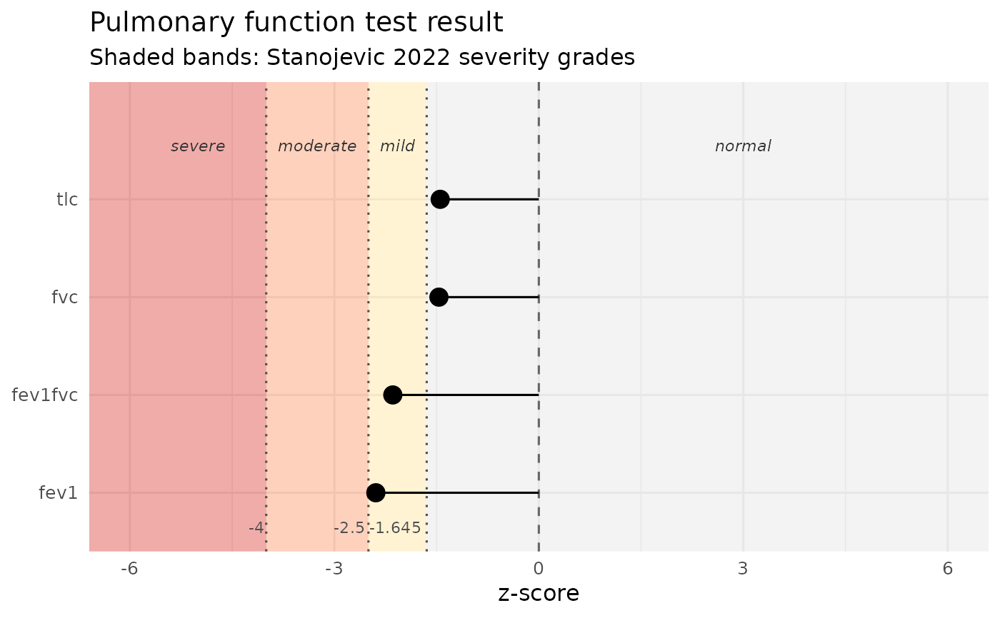

pft_plot() draws a single-patient z-score figure: one row per
measure, points at the patient's z-score, shaded reference bands
for the four Stanojevic 2022 severity grades returned by
pft_severity(): normal (z >= -1.645), mild (-2.5 <= z < -1.645),
moderate (-4 <= z < -2.5), and severe (z < -4). The normal band
extends symmetrically above zero to the upper limit of normal;
values above the ULN are shown but are not a 2022 severity grade.
Requires the ggplot2 package (a Suggested dependency).
Arguments
- data
A single-row data frame produced by
pft_interpret(),pft_spirometry(),pft_volumes(), orpft_diffusion()with measured values supplied (i.e. at least one<measure>_zscorecolumn present). Errors ifnrow(data) != 1.
See also
pft_interpret() for the input data shape.
Examples
patient <- data.frame(
sex = "M", age = 45, height = 178, race = "Caucasian",
fev1_measured = 2.5,
fvc_measured = 3.8,
fev1fvc_measured = 2.5 / 3.8,
tlc_measured = 6.0
)
pft_plot(pft_interpret(patient))
